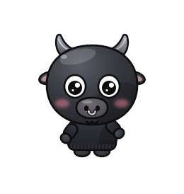

NEZI — ваш AI-агент у гаманці
NEZI живе прямо в Nezeriya Wallet. Запитайте текстом або голосом, як поповнити, обміняти чи відкрити карту, скільки зараз коштує монета, і отримайте відповідь за секунди.
Питайте що завгодно
NEZI знає кожен розділ Nezeriya і бачить живі дані гаманця. Він не просто відповідає, а показує, куди натиснути.
- Гаманець: як поповнити, вивести, обміняти, відкрити карту і де знайти потрібну функцію.
- Курси та ціни: крипта, акції, валюти, комісії та ціни карт.
- Фінанси простими словами: крипта, фондовий ринок, депозити й інвестиції.
- Кнопки дій: «Поповнити», «Надіслати» чи «Обмін» прямо під відповіддю.

Що вміє NEZI
Голосом
Натисніть мікрофон і говоріть. Текст з'являється наживо, навіть тихий голос розпізнається, а перед відправкою його можна виправити.
Історія чатів
Усі розмови зберігаються в історії з пошуком, тож до потрібної відповіді легко повернутися.
Телефон і комп'ютер
На комп'ютері зліва список чатів, на головному екрані швидкі запитання, а Ctrl/Cmd+K відкриває новий чат.
Вчиться на оцінках
Позначайте відповіді як корисні чи ні. Корисні NEZI використовує знову, а команда перевіряє й виправляє слабкі.
Миттєві відповіді
На популярні питання про поповнення, вивід, карти, PIN, NZR і чеки NEZI відповідає одразу з бази відповідей команди.
Живі курси
Ціни крипти й акцій, курси валют, комісії та ціни карт NEZI бере прямо з гаманця в момент питання.
Безпека
NEZI ніколи не просить seed-фразу, PIN, приватний ключ чи коди з карти і нагадує, що так не робить ніхто з Nezeriya.
Люди поруч
Якщо питання про конкретну транзакцію, NEZI підкаже звернутися до живої підтримки @Nezeriya_Support.
Маленький чорний бичок у светрі
NEZI має власний характер. Він вітається, слухає, думає й пише разом з вами, а його настрій змінюється під час розмови.


Як знайти NEZI
Відкрийте гаманець
Запустіть офіційний додаток @NezeriyaWalletApp у Telegram.
Натисніть NEZI
Кнопка NEZI є в правому нижньому куті картки WALLET на головному екрані гаманця.
Запитайте
Напишіть питання або натисніть мікрофон і скажіть його вголос.
Оцініть відповідь
Ваша оцінка допомагає NEZI відповідати краще.
Поговоріть з NEZI
NEZI вже чекає в гаманці Nezeriya в Telegram.